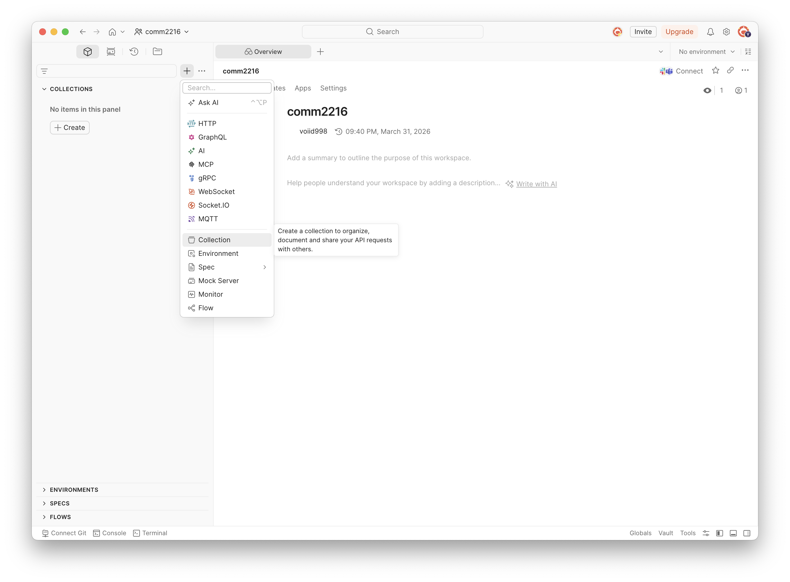
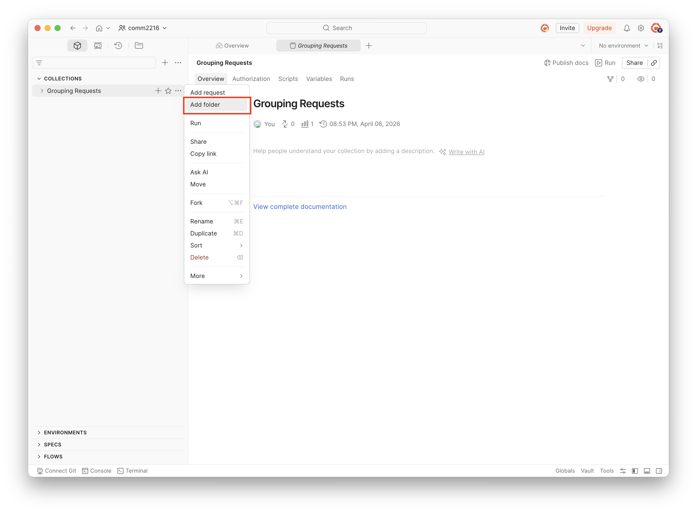
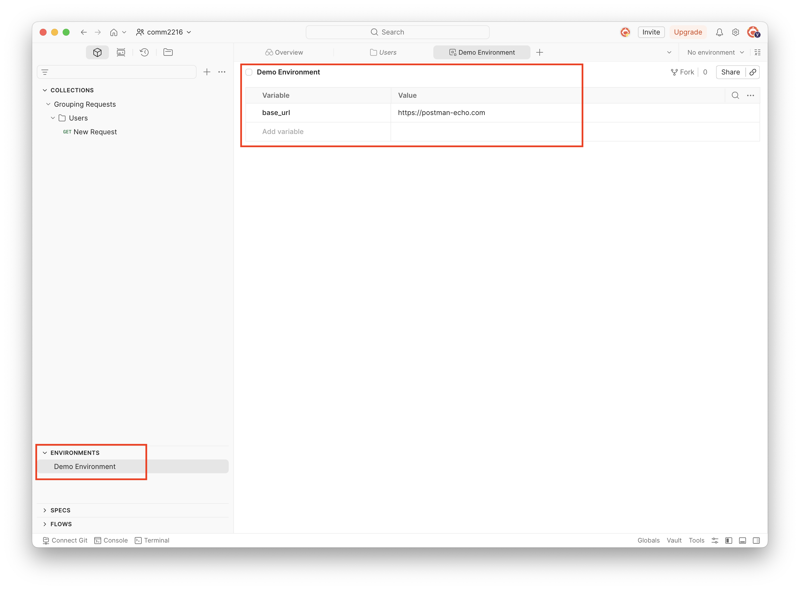
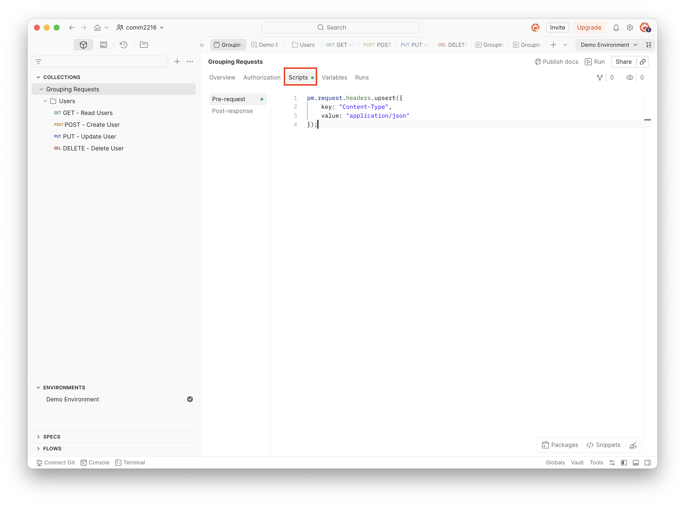
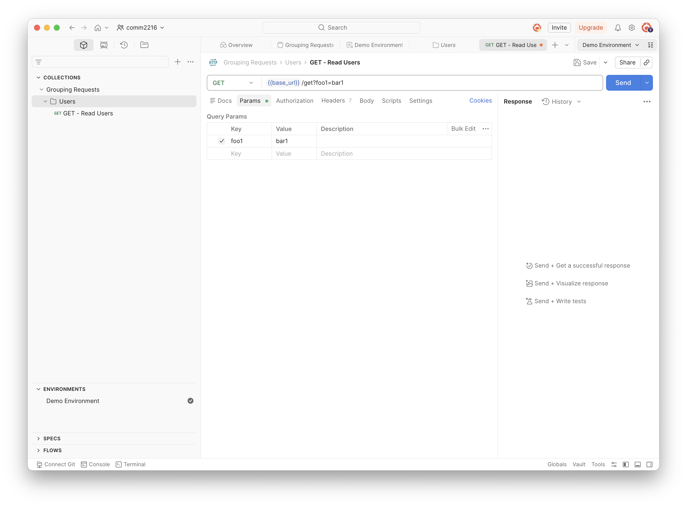
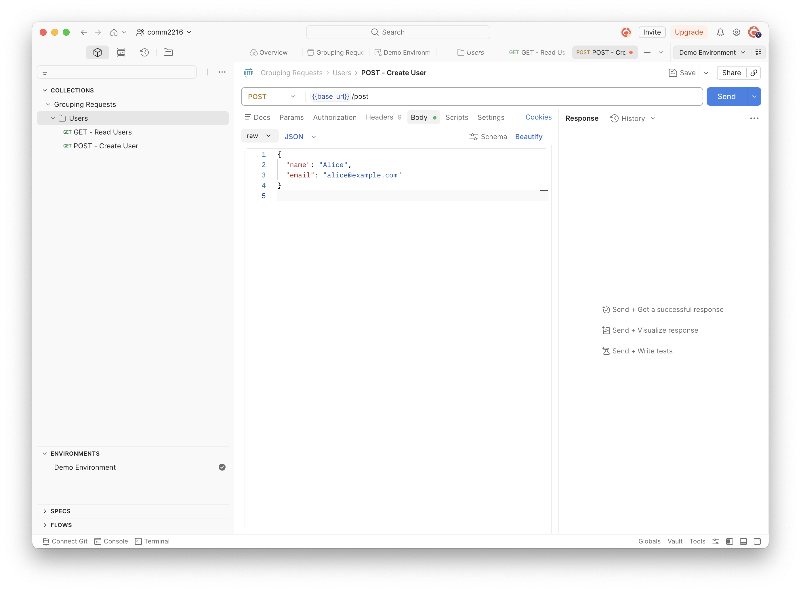
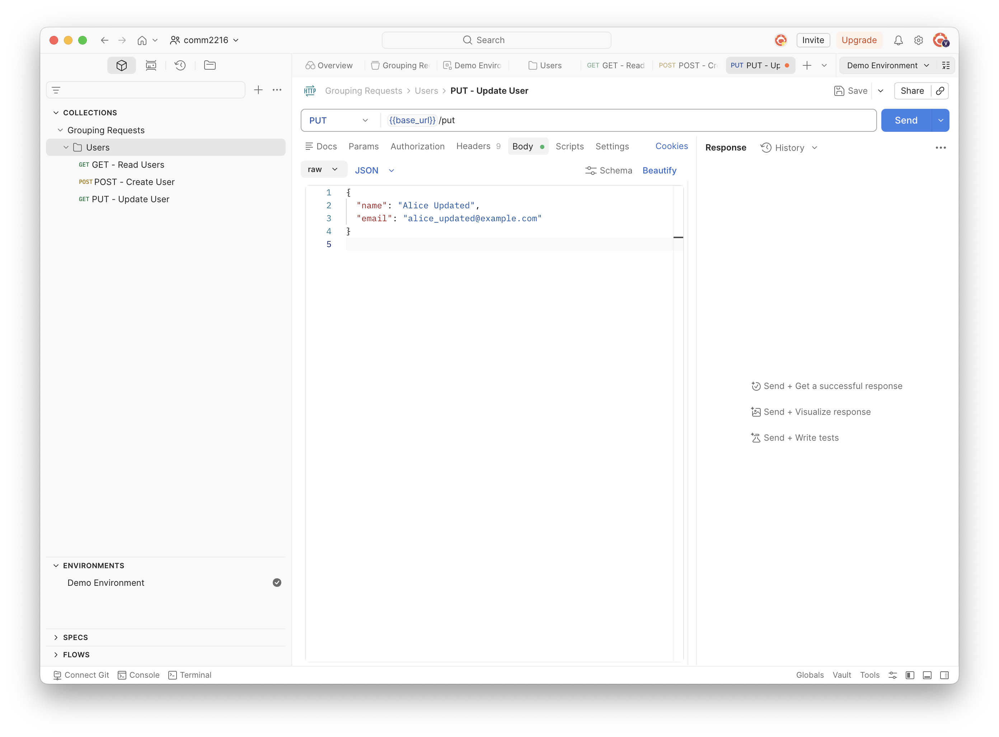
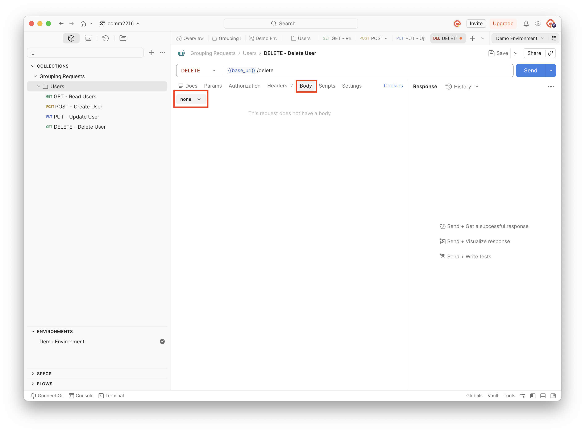
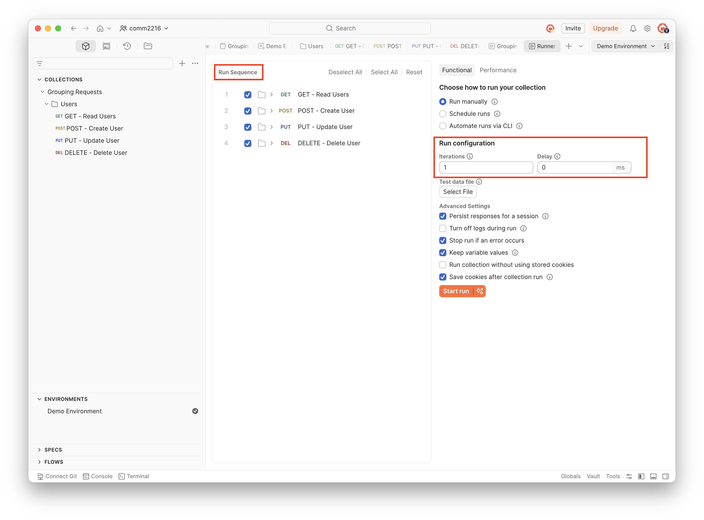
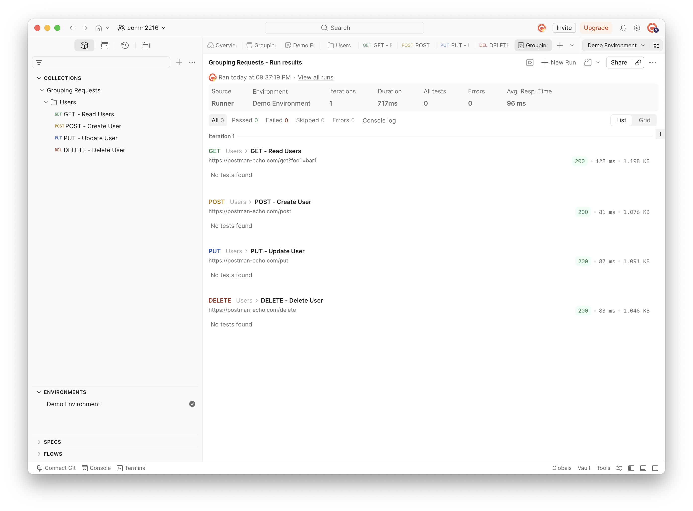

Grouping Requests with Collections
Overview
In this section, you will organize API requests using Collections — one of Postman's most powerful features for managing and running groups of related requests.
This section is organized into four parts:
- Set Up — Create a Collection, add a Folder, and configure a shared environment variable and headers (Steps 1–3).
- Build the Requests — Add GET, POST, PUT, and DELETE requests that cover a full CRUD workflow (Steps 1–4).
- Run the Collection — Use the Collection Runner to execute all requests at once.
- Review the Results — Read the runner output to verify everything worked.
By the end of this section, you will know how to organize related requests into a collection, share configuration across requests, and run a full CRUD test with one click.
What is a Collection?
A Collection is a folder that holds related requests together. You can share configuration across every request in the collection, and run them all at once.
Set Up
Creating a collection and folder, setting a base URL variable, and adding a shared header help organize requests, reuse common configurations, and ensure consistent API management across different environments and team members.
-
Find the "COLLECTIONS" section in the left sidebar and click the "+" icon at the top of the sidebar.
-
Select Collection from the menu that appears and name it
Grouping Requests.
-
Right-click the
Grouping Requestscollection in the sidebar. -
Select "Add Folder" and name the folder
Users.
-
Store the base URL in a variable instead of typing the full URL into every request.
-
To Create an Environment with
base_url:-
Scroll down to find the "ENVIRONMENTS" section at the bottom.
-
Click the "+" icon to open a new environment tab. Name it
Demo Environmentat the top of the editor. -
Add a row in the variable table:
- Variable:
base_url - Value:
https://postman-echo.com
- Variable:
- Click "Save" .
-

-
To Add a Shared Header to the Collection**
- Click the
Grouping Requestscollection name in the sidebar to open it. - Click the Scripts tab (in the tab row below the collection name).
- Click Pre-request inside the Scripts tab.
-
Type the following script into the editor:
-
Click Save.
- Click the

-
Automatic Header Setup
This script runs automatically before every request in the collection. You will not need to manually add Content-Type: application/json to each request.
Build the Requests
Adding GET, POST, PUT, and DELETE requests inside the Users folder helps demonstrate and organize common API operations, making it easier to manage and test different request types within a structured collection.
-
Add a GET Request (Read)
- Right-click the
Usersfolder in the sidebar. - Select Add Request.
- Name it
GET - Read Users. - Set the method to GET.
- Enter the URL:
- Click the "Params" tab and add:
- Key:
foo1— Value:bar1
- Key:
- Click "Save".

- Right-click the
-
Add a POST Request (Create)
- Right-click the
Usersfolder and select Add Request. - Name it
POST - Create User. - Set the method to POST.
- Enter the URL:
- Click the "Body" tab.
- Select raw and choose JSON from the format dropdown on the right.
- Enter the following JSON body:
- Click "Save".

Sending Data with the Body Tab
The Body tab is where you send data with POST, PUT, and PATCH requests. The
Content-Type: application/jsonheader you set on the collection automatically tells the server the body is JSON. - Right-click the
-
Add a PUT Request (Update)
- Right-click the
Usersfolder and select Add Request. - Name it
PUT - Update User. - Set the method to PUT.
- Enter the URL:
- Click the "Body" tab, select raw, and choose JSON.
- Enter the following body:
- Click "Save".

PUT vs PATCH
PUT replaces the entire resource with the new data you send. PATCH updates only the specific fields you include. Use PUT when you want to fully overwrite a record.
- Right-click the
-
Add a DELETE Request (Delete)
- Right-click the
Usersfolder and select Add Request. - Name it
DELETE - Delete User. - Set the method to DELETE.
- Enter the URL:
- Leave the Body as none.
- Click "Save".

- Right-click the
Run the Collection
The Collection Runner sends all your requests in sequence and records the result for each one.
-
Right-click the
Grouping Requestscollection in the sidebar. -
Select "Run collection" and review the settings:
- Environment: Confirm
Demo Environmentis shown. - Iterations: Leave as
1(runs each request once). - Delay: Leave as
0ms, or enter200ms if you want a short pause between requests. - Sequence: Confirm the requests are listed in this order:
GET - Read UsersPOST - Create UserPUT - Update UserDELETE - Delete User
- Environment: Confirm
-
Click the Run button to start.

Review the Results
When the run finishes, Postman opens a Run results tab automatically. The page title shows "[Collection name] - Run results".
Each request is listed. Each row shows the method, folder path, request name, URL sent, status code, response time, and response size.

Managing Request Runs
To re-run, click New Run in the top-right corner of the results tab. To view past runs, click View all runs.
Conclusion
By the end of this section, you will have successfully learned the following:
- How to create a Collection and organize requests inside a Folder.
- How to use
{{base_url}}to manage the server address in one place. - How to set shared headers at the collection level.
- How to build GET, POST, PUT, and DELETE requests that cover a full CRUD workflow.
- How to use the Collection Runner to execute and verify all requests at once.
Congratulations! You have built and run your first complete CRUD API workflow in Postman.